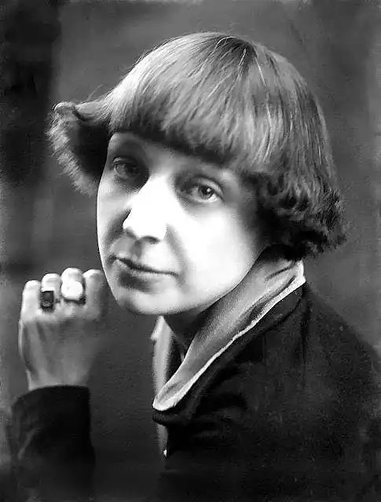
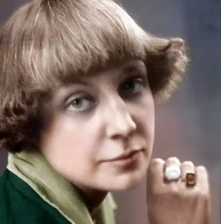
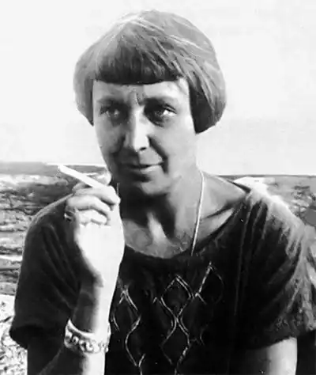

ЦВЄТАЄВА, Марина Іванівна (Цветаева, Марина Ивановна — 26.09.1892, Москва — 31.08.1941, Єлабуга) — російська поетеса.Цвєтаєва — це справжня окраса російської поезії "срібної доби", її творчість, як і творчість А. Ахматової, є найвищим злетом російської "жіночої" поезії. Багато в чому схожими є й їхні життєві долі, сповнені важких випробовувань і трагічних втрат. Н. Мандельштам у своїх спогадах "Друга книга" писала: "Я не знаю долі страхітливішої, ніж у Марини Цвєтаєвої". І це справді так.
Цвєтаєва народилася в сім'ї професора Івана Цвєтаєва, засновника Московського музею образотворчих мистецтв, сина бідного сільського священика з с. Талиці Володимирської губернії, котрий, як він сам згадував, до 12 років навіть не мав чобіт. Мати — з польсько-німецької сім'ї, музикант, учениця Рубінштейна. Коли Марині виповнилося десять років, затишне сімейне життя перервалося хворобою матері — сухотами. Необхідно було лікуватися, і родина виїхала за кордон — в Італію, Швейцарію, Німеччину. У католицьких пансіонах Лозанни і Фрайбурга Марина отримала початкову освіту. Наступний рік родина прожила у Криму, де майбутня поетеса відвідувала Ялтинську гімназію і пережила бурхливе захоплення революційною романтикою. У 1906 р. Цвєтаєви повернулися у Тарус, де невдовзі померла мати Цвєтаєвої. Того ж року вона вступила в інтернат при московській приватній гімназії. У 1908 р. Ц. самостійно здійснила поїздку у Париж, де в Сорбонні слухала скорочений курс історії старофранцузької літератури.
У 1912 р. вона одружилася із Сергієм Ефроном.Роки Першої світової війни, революції та громадянської війни були часом стрімкого творчого зростання Цвєтаєвої. Вона мешкала у Москві, багато писала, але публікувала мало. У січні 1916 р. Цвєтаєва відвідала Петроград, де зустрілася з М. Кузьміним, Ф. Сологубом і С Єсеніним, а невдовзі подружилася з О. Мандельштамом. Пізніше, уже в радянські роки, зустрічалася з Б. Пастернаком і В. Маяковським, дружила зі старим К. Бальмонтом. О. Блока бачила двічі, але підійти до нього не наважилася. З початком громадянської війни Цвєтаєва жила впроголодь, їздила за продуктами у Тамбов, а двох своїх дочок змушена була віддати у Кунцевський притулок, аби хоч якось прогодувати. Одна з них (Аріадна) важко захворіла, а інша (Ірина) померла. У 1922 р. Цвєтаєва виїхала за кордон до чоловіка С. Ефрона — колишнього офіцера Добровольчої армії. Зустріч із чоловіком у еміграції і народження сина на деякий час повернули їй втрачену душевну рівновагу, але важкі умови життя, постійні поневіряння і безкінечні переїзди з однієї країни в іншу, прохолодне, а то й вороже ставлення до неї з боку еміграційної більшості (через її терпиме ставлення до Радянської Росії) постійно створювали напружену психологічну атмосферу. Потрапивши в еміграцію, Цвєтаєва спочатку замешкувала у Берліні, який їй не сподобався. За її словами, це був світ "після Росії — прусський, після революційної Москви — буржуазний, не сприйманий ні очима, ні душею; чужий". Цвєтаєва перебралася у Чехію, яка їй дуже сподобалась. З листопада 1925 р. Цвєтаєва оселилася у Франції, але враження від цієї країни у неї залишилися не найкращі: "Париж мені духовно нічого не дав"; "Париж не для мене". Якимось чином причетний до вбивства у Парижі одного із троцькістів, утік із Франції і повернувся у Росію її чоловік, а вслід за ним і донька Аріадна (Аліна). У 1939 р. повернулася на батьківщину і Цвєтаєва, хоча й з важким почуттям; "Тут я не потрібна. Там я неможлива", — писала вона з Росії у Францію. У серпні того самого року заарештували її доньку, котрій багато років доведеться провести в таборах і на засланні, а повністю реабілітують лише у 1955 р. У жовтні того ж року заарештували, а через два роки розстріляли і її чоловіка. На початку війни Цвєтаєва разом із сином евакуювали у містечко Єлабуга на Камі, а 31 серпня 1941 р. поетеса у стані глибокої депресії наклала на себе руки. У передсмертній записці вона просила вибачення і пояснювала свій вчинок тим, що була загнана у глухий кут. Через три роки, у 1944 р., у боях під Вітебськом загинув і її син. Могилу самої Цвєтаєвої, яку намагалися розшукати після війни, так і не знайшли. Залишилися вірші Цвєтаєвої, які ще довго торували дорогу до читача: попри усі намагання доньки і друзів поетеси, їх почали друкувати лише з 60-х pp. XX ст. її вірші, за словами Г. Адамовича, "випромінюють любов, і любов'ю пронизані, вони відкриті світові і немовби намагаються обійняти увесь світ. У цьому їхня головна принада. Вірші ці написані від душевної щедрості, від щирості серця... І насправді здається, що від віршів Цвєтаєвої людина стане кращою, добрішою, самовідданішою, шляхетнішою". Творчий спадок Цвєтаєвої чималий. Це понад 800 ліричних віршів, 17 поем, 8 п'єс, близько 50 прозових творів, понад 1000 листів. Свої перші поезії Цвєтаєва написала ще у 1898 р. Основні дореволюційні віршові збірки і цикли Цвєтаєвої: "Вечірній альбом" ("Вечерний альбом", 1910), "Чарівний ліхтар" ("Волшебный фонарь", 1912), "З двох книжок" ("Из двух книг", 1913), "Лебединий стан" ("Лебединый стан", 1917—1920). Уже тут з'являються теми та мотиви, які надалі стануть наскрізними у її творчості: історія, кохання, поезія, Росія, власна біографія, — і все це пропущено через пристрасну емоційність та роздуми. У ранній творчості Ц., за спостереженнями О. Соколова, "панує лірика самотності, відірваності від оточення і водночас лірика спрямованості до людей, до щастя. Цвєтаєва була, за її словами, завжди "чужою", тобто цілком незалежною і в житті, і в літературі. До літературних традицій у неї вже змалку також було своє, оригінальне ставлення. "Скажу, як є, — писала вона А. Тесковій у 1928 p., — що я в кожному колі — чужа, усе життя. Серед політиків, як і серед поетів". Життєвим девізом Цвєтаєвої стало гасло "Одна — з усіх — за всіх — проти всіх". Позиція абсолютного морального максималізму пізніше і заведе її у складні життєві ситуації. Аналогічною з самого початку її творчості була і її літературна позиція — романтичне бунтарство проти всіх, засноване на максималізмі ідеалів. З цим, очевидно, пов'язане довільне суміщення у її творчості найрізноманітніших літературних традицій". Цвєтаєва не зараховувала себе ні до символістів, ні до акмеїстів, і завжди вважала, що в питаннях художніх пріоритетів вона "сама по собі". Художні особливості ранньої лірики Цвєтаєвої, на думку О. Соколова, визначає "вміння намалювати характер із деталей побуту, пейзажу, яскрава афористичність, експресія вислову почуття і думки, поєднання розмовних інтонацій з урочистою лексикою. Тоді ж окреслились притаманні поезії Цвєтаєвої контрасти лексичних рядів, поєднання прозаїзму та високої патетики, побудова вірша на одному виділеному слові і словотвір від одного й того ж або близького йому фонетичного кореня. Поезія Цвєтаєвої — уся в розмаїтті поетичних пошуків, відкриттів нових можливостей російського вірша — від вишукано-романтичних стилізацій до вияву високого драматизму людського існування": А може, краще перемога,Якою варто завершити, —Пройти, щоб сліду — ні одного,Пройти, щоб тіні не лишитиНа стінах...Може, вже одразуІ викреслитись із свічад?Так: Лермонтовим по Кавказу Прокрастись, не задівши шатГірських...А може, так погратись:Перстом Себастіана БахаСтруни органу не торкатись?Розпастись, не лишивши прахуНа урну...А якщо — обманом? Щоб виписатися з широт?Так: Часом, ніби океаном,Прокрастись, не рухнувши вод...("Прокрастись...", пер. Ж. Храмової)У доеміграційний період Цвєтаєва створила збірки "Версти" ("Версты", 1921), "Вірші до Блока" ("Стихи к Блоку", 1922), "Розлука"("Разлука", 1922), присвячену Дж. Казанові поему "Пригода" ("Приключение", 1919), а також написану на сюжети російських народних казок поему-казку "Цар-дівиця"("Царь-девица", 1922). В еміграційний і "радянський" періоди творчості Цвєтаєвої загальна тональність її віршів ставала більш похмурою і песимістичною, водночас більш глибокою і філософічнішою. У Берліні вийшли друком дві збірки віршів Цвєтаєвой "Психея" ("Психея", 1923) і "Ремесло" ("Ремесло", 1923). У ліриці Цвєтаєвой цього періоду розкрита психологія кохання, туга за батьківщиною, звучить тема покликання поета, трапляються численні замальовки із сценок еміграційного життя, роздуми над сенсом життя, переосмислення й інтерпретації "вічних" тем і образів (Гамлета й Офелії, Христа і Магдалини, Федри й Іпполіта). Як ні у кого з інших російських поетів, у Цвєтаєвой надзвичайно багато поетичних, літературно-критичних, епістолярних відгуків на творчість інших поетів (О. Пушкін, О. Блок, Б. Пастернак, Р. М. Рільке й ін.). У роки еміграції Цвєтаєва створила і кілька поем "Поема гори" ("Поэма горы", 1924), "Поема кінця" ("Поэма конца", 1924), "Поема Сходинок" ("Поэма Лестницы", 1926), "Поема повітря" (1930), ліричну сатиру "Щуролов" ("Крысолов", 1926), у яких відобразилися її філософські погляди на сутність та призначення людського існування, а також еміграційні враження, пронизані трагічною гіркотою того непорозуміння, яке її оточувало. "Поема гори" і "Поема кінця "— це своєрідна лірико-трагедій-на поетична дилогія, яку Пастернак назвав "найкращою у світі поемою про кохання". В основі сюжетів поем — коротка, але драматична історія реальних взаємин, пов'язаних із захопленням поетесою емігрантом із Росії К. Радзевичем. Поеми цікаві не тільки тим, що історія кохання передана в них з винятковою силою драматичного психологізму, не тільки чудовими празькими пейзажами, а й цікавим поєднанням у них любовного роману із саркастичним викриттям міщанської ситої повсякденності, буржуазного ладу, спотворених стосунків. Сюжетну основу поеми "Щуролов" складає західноєвропейська середньовічна легенда про те, як у 1284 р. німецьке місто Гаммельн зазнало навали пацюків. Врятував міщан мандрівний музикант: звуки його флейти зачарували гризунів, повели їх за мелодією до ріки Везвер, у якій вони знайшли свій кінець. Бургомістр і міські товстосуми, котрі обіцяли рятівнику грошову винагороду, обдурили його. Тоді розгніваний музикант, граючи на флейті, зачарував і повів за собою всіх дітей міста Гаммельна. Юних міщан, котрі зійшли на гору Контенберґ, поглинула безодня.